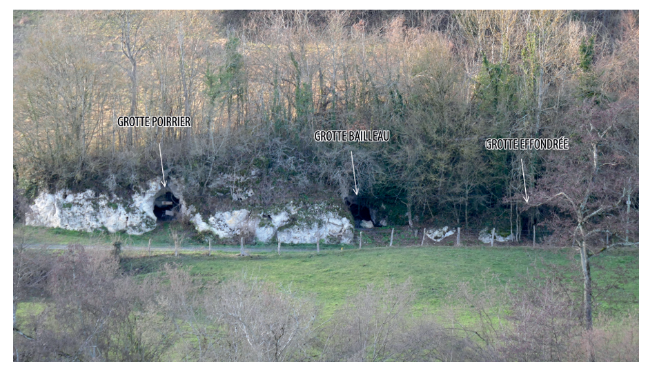
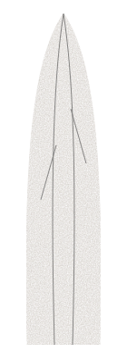
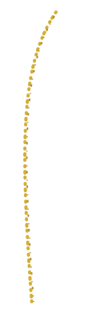
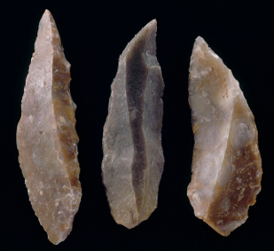
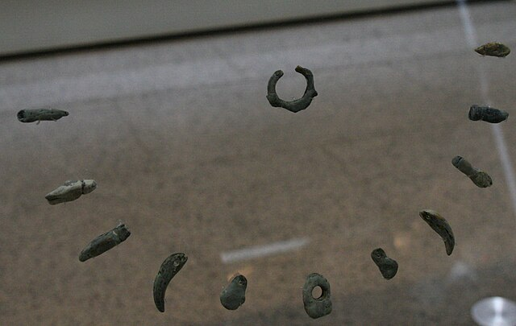

Située sur la commune de Châtelperron (Allier), la Grotte des Fées est le site éponyme d'une culture charnière de la Préhistoire : le Châtelperronien. Niché dans la vallée de la Besbre, ce gisement a été révélé au milieu du XIXe siècle lors du creusement de la voie ferrée reliant le site aux carrières voisines.

(Source : ENTRE LES LIGNES)
Le site occupe une place centrale dans les débats sur la transition entre le Paléolithique moyen et supérieur. Il témoigne de la présence des derniers Néandertaliens en Europe occidentale, à une époque où les premiers Humains Anatomiquement Modernes (Aurignaciens) commencent à s'installer.
Les datations radiocarbone placent l'occupation principale entre 45 000 et 40 000 ans avant notre ère, faisant de Châtelperron un témoin direct de cette possible cohabitation ou succession culturelle.
Le "fossile directeur" de ce site est la célèbre Pointe de Châtelperron. Il s'agit d'un couteau à dos courbe, obtenu par une retouche abrupte sur le bord d'une lame de silex. Cette innovation technique marque une rupture avec les méthodes précédentes et illustre une "modernité" comportementale souvent débattue chez Néandertal.
Les premières fouilles (Albert Poirrier vers 1848, puis Guillaume Bailleau) ont malheureusement souffert de méthodes anciennes, entraînant des doutes sur la stratigraphie du site. Ces mélanges de couches (interstratification) ont alimenté des décennies de controverses scientifiques sur la chronologie exacte des occupations.


Passez votre souris sur la ligne pour tailler la pointe.
Les fouilles ont mis au jour une quantité impressionnante de vestiges en silex. La pièce maîtresse est la Pointe de Châtelperron. Contrairement aux outils moustériens plus anciens, ces pointes sont façonnées sur des lames allongées avec un dos aminci par des retouches abruptes.
Cette technique permet d'obtenir un tranchant extrêmement efficace tout en facilitant l'emmanchement sur une hampe en bois ou en os.

figure 2 : Pointes de Châtelperron. Fouilles Bailleau (1867-1870). © GrandPalaisRmn (musée d’Archéologie nationale), Jean‑Gilles Berizzi.(Source : Archéologia, n°650. "Châtelperron ENQUÊTE SUR UN ILLUSTRE INCONNU")
Bien que le Châtelperronien tire son nom du site de Châtelperron, les objets de parure les plus spectaculaires (dents percées, pigments) proviennent principalement d’autres sites, notamment la Grotte du Renne. Ces découvertes sont néanmoins attribuées à la même culture archéologique. L'une des découvertes les plus fascinantes attribuées au Châtelperronien concerne les objets de parure. Des dents de loup, de renard et de marmotte percées ou rainurées ont été retrouvées, suggérant qu'elles étaient portées en pendeloques.

figure 3 : Réplique d'un ornement fait en os et en dents de renard Grotte du Renne, Arcy-sur-Cure (France)(Source : commons.wikimedia.org)
La présence de ces objets, ainsi que de l'utilisation de pigments (ocre rouge), pose la question de la pensée symbolique : ces objets étaient-ils des inventions néandertaliennes ou le résultat d'échanges avec les premiers hommes modernes ?
L'étude des restes osseux (archéozoologie) révèle que les occupants de la grotte chassaient principalement le Renne, le Cheval et le Bison. L'abondance de ces espèces indique un climat froid et un paysage de steppe ouverte lors de l'occupation.
Pendant longtemps, le Paléolithique supérieur (période des innovations technologiques) a été attribué exclusivement à l'Homme moderne (Homo sapiens). Cependant, la découverte de restes néandertaliens associés à des outils châtelperroniens sur d'autres sites (comme Arcy-sur-Cure) a provoqué un séisme archéologique.
Néandertal aurait imité les techniques des Hommes modernes arrivant en Europe.
Néandertal aurait développé ces innovations (parures, lames) de manière autonome, prouvant une complexité cognitive égale à la nôtre.
Dans les années 2000, certains chercheurs ont suggéré que les couches archéologiques de la Grotte des Fées étaient mélangées (interstratifiées). Selon cette hypothèse, les objets "modernes" seraient tombés dans les couches "anciennes" à cause de perturbations géologiques ou de méthodes de fouilles imprécises au XIXe siècle.
C'est ici que le terme "Cold Case" prend tout son sens : les nouvelles analyses et datations au carbone 14 tentent de démêler ce puzzle pour savoir si les deux espèces ont réellement cohabité dans cette vallée.
Aujourd'hui, si le débat reste ouvert, la majorité des chercheurs s'accorde à dire que le Châtelperronien est bien l'œuvre des derniers Néandertaliens. La Grotte des Fées reste le symbole de cette humanité disparue qui, aux portes de son extinction, manifestait un éclat culturel et symbolique fascinant.
Webographie complète disponible sur la page Sources.